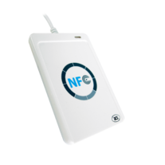
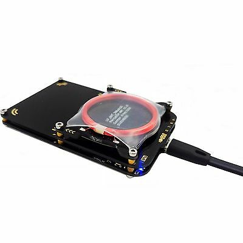

TP - MIFARE Classic 1K Ethical Hacking⚓︎
Lecture / Ecriture avec Clé connue (ACR122u)⚓︎
Le ACR122u est un lecteur graveur de tag RFID, le seul respectant tous les standards actuellement en vigueur.
Nous allons l'utiliser pour lire et écrire des blocks de données sur une carte dont nous connaissons la Key A.
Ce lecteur vient avec son propre SDK et coute entre 25€ et 30€.
`
Parallels Desktop
Pour connecter le lecteur, il faut aller dans les paramètres de Parallel Desktop :
> USB & Bluetooth > Share smart card readers with windows
Le décocher puis le recocher.
ACR122u Tool - UID⚓︎
- Connecter le lecteur au PC
- Ouvrir le logiciel `ACS SMart Card Reader
- Selectionner :
Smart Cards > MIFARE SERIES > Mifare Classic > Mifare Classic Card Tool - La LED du lecteur est rouge
- Poser le badge Bleu 1 sur le lecteur, la LED devient verte
- Pour connecter le lecteur cliquer sur :
New Connection > PC/SC Connection - Récupérer l'UID de la carte :
Card UUID
ACR122u Tool - ATR⚓︎
Comme sur une smart card, on voit l'ATR (Answer To Reset) passer quand on pose le badge sur le lecteur.
Cela nous donnera l'accès aux commandes cartes.
-
Il faut maintenant Charger les Clés dans le lecteur :
Load Key > Key Structure : 00 / Key Number : 00 / Key > FF FF FF FF FF FF
(Default Transport Configuration pour toute nouvelle carte)
Load Key > Key Structure : 00 / Key Number : 01 / Key > FF FF FF FF AA 01
(Clé A modifiée du secteur 1).
Load Key > Key Structure : 00 / Key Number : 02 / Key > FF FF FF FF BB 01
(Clé B modifiée du secteur 1). -
Puis on peut
s'authentifiersur le block de notre choix :
block 0x00, avec laClé A n° 0x00provisionnée au dessus. - On peut enfin
lireleblock 0(en HEX) sur une longueur de0xOFet retrouver notre UID ! - On peut lire les blocks 1 et 2, ils ne contiennent que des 0.
- On peut aussi lire le block 3 qui est le sector trailer du secteur 0.
ACR122u Tool - Read / Write Data Block in Sector 1⚓︎
- Authenticate sur block 4
- Ecrire & Lire le block 4 (Peut être décodé en ASCII)
- S'authentifier sur block 5
- Ecrire & Lire le block 5 (Peut être décodé en ASCII)
Warning
Pour lire, il faut spécifie une longueur > 0 Pour écrire, il faut écrire TOUT le bloc (Longueur 16 Octets donc `0x10)
Tip
Le numéro du block doit être mis en HEX.
Si on veut le block 11, il faut mettre 0x0B.
ACR122u Tool - Read / Write Sector Trailer⚓︎
- S'authentifier sur block 3
- Essayer de lire le block 3.
Tip
On remarque que la `clé A ne peut pas être lue, on récupère 00 00 00 00 00 00
Et on ne pourra jamais la lire sur une Mifare, il faut obligatoirement que le lecteur la connaisse au préalable !
Tip
Pour modifier les clés facilement, il faut utiliser "Easy Key".
- Utiliser
Easy Keypour changer la clé A - S'authentifier avec la Clé A :
FF FF FF FF FF FFsur le sector 1 - Updater la Clé A du Sector 1 en :
FF FF FF FF AA 01, puis cliquer surFormat Sector
Tip
Le bloc numéro 3 du sector est updaté automatiquement car c'est le Sector Trailer !
- S'authentifier en utilisant la nouvelle clé sur le secteur 1
- Modifier la clé B en ;
FF FF FF FF BB 01
Tip
On pourrait aussi modifier les Access Bits ...
- Verifier ces changements en essayant de lire les blocks 5 ou 6 avec les anciennes clés. Cela devrait échouer. Le block 8 devrait fonctionner car il appartient au secteur 2 que nous n'avons pas modifié.
- Charger les nouvelles clés et s'authentifier avec.
- Verifier que l'on peut maintenant lire les `blocks 4 & 5.
Hack de Clés (Proxmark3)⚓︎
Le Proxmark 3 est un outil qui permet des tests de penetration, du clonage et de la simulation de tag RFID.
Il coûte environ 40€ en Chine mais plus de 150€ en Europe ...
Il vient avec le logiciel proxmark3 qui lui est open source.

Documentation Officielle PM3
Source utile.
DISCLAIMER
Dans ce cours nous ne hackerons que des cartes/badges personnelles dont nous avons nous même crypté les données !
Nous sommes des "White Hats" !
Tip
Pour les besoins de ce cours j'ai flashé le firmware modifié du developer "Iceman" ;)
Pour utiliser le client `pm3 de Iceman :
1 2 3 | |
Trouver la fréquence d'un badge inconnu⚓︎
Il existe trois commandes principales :
hw: pour l’envoi de commandes hardware au Proxmark 3 ;lfethf: pour manipuler la basse et la haute fréquence.
Tentons de détecter la fréquence de fonctionnement d’une carte NFC inconnue.
Il existe une fonction dans le Proxmark 3 qui mesure la chute de tension induite dans l’antenne lorsqu’un tag s’alimente.
La commande hw tune renseigne les tensions présentes dans les deux antennes (basse et haute fréquences).
Tip
Si nous lançons le client avec le support Qt5,
la commande tracera également une courbe de tension de l’antenne basse fréquence en fonction de la fréquence utilisée,
montrant ainsi à quelle fréquence l’antenne LF fonctionne de manière optimale.
Si on mesure les tensions présentes avant et après l’approche du tag sur les antennes haute et basse fréquences, on observera une chute importante de la tension à la fréquence de fonctionnement du tag.
Sans la carte :
1 2 3 4 5 6 7 8 9 10 11 12 13 | |
Avec la carte :
1 2 3 4 5 6 7 8 9 10 11 12 13 | |
On voit que la tension a chuté à 32.76 V lorsque l’antenne haute fréquence fonctionnait à 13.56 kHz.
Dans le cas présent, nous constatons donc que la carte inconnue fonctionne à 13.56 kHz.
Tip
C'est plus difficile à voir avec un badge, car l'antenne est beaucoup plus petit.
Dans mes essais, je n'ai pas noté de différence de voltage du tout avec le badge ...
Default Keys Attack⚓︎
Cette attaque est simple, elle consiste à vérifier toutes les clés par défaut des différents constructeurs les une à la suite des autres afin de trouver des secteurs qui les utilisent. Ce sera notre point d'entrée pour la suite.
Tip
C'est un mini-bruteforce !
Nous utilisons la carte avec les clés modifiées sur le secteur 1.
1 2 | |
Success
Tous les secteurs qui utilisent les clés par défaut sont désormais accessibles, sauf notre secteur 1 qui résiste encore.
Nested Attack⚓︎
L'étape précedente nous offre la possibilité de s'authentifier sur un ou plusieurs secteurs du badge avec les clés par défaut.
Cela nous ouvre les portes de la Nested Attack (De l'interieur).
Info
Le mifare classic 1k a un générateur de nombres aléatoires faible (RNG) qui est essentiellement un registre à décalage.
Sa faiblesse vient de la possibilité de restaurer le nonce1 généré de 32 bits.
Si nous nous authentifions plusieurs fois avec une clé connue, nous pouvons trouver le nombre médian de décalages et deviner assez précisément le nonce non crypté en annulant le nonce crypté (nous nous sommes déjà authentifiés et nous connaissons le cryptage).
Puisque ce nonce est initialisé par la clé symétrique XOR avec l'UID de la carte, nous pouvons effectivement trouver 32 bits de la clé de 48 bits.
1 | |
Success
La/les clés manquantes sont trouvées ! On peut lire le secteur :
1 | |
Danger
Pour se protéger de ses 2 attaques il faut donc systématiquement modifier TOUTES les clés de TOUS les secteurs !!
Darkside Attack⚓︎
Tip
Utiliser le badge jaune avec toutes les clés modifiées (Clés : FF FF FF FF AA/BB <0xSectorNb>) !
Les manipulations ci-dessus n’ont été possibles que parce que nous avons découvert une clé par défaut omise par les administrateurs des équipements.
L’attaque dite Darkside ou de Courtois, du nom de son découvreur Nicolas Courtois, va tenter de retrouver une clé configurée dans un tag en exploitant un défaut dans l’initialisation du générateur de nombres aléatoires du microcontrôleur du tag (le générateur commence toujours par la même valeur lorsque la carte est alimentée, donc si on contrôle finement le timing, on prédit le nombre aléatoire tiré par le tag). Dès qu’une première clé est découverte, il sera alors possible de passer à l’attaque Nested.
1 | |
Warn
Ici aussi, si le tag MIFARE est trop récent, l’attaque échouera et on devra recourir à d’autres types d’attaques.
Success
Nous avons trouvé au moins une clé ! On peut donc utiliser une attaque nested pour trouver toute les autres :)
Man-in-the-Middle Attack⚓︎
Si la carte a résisté aux attaques précedentes, il faut sniffer la communication entre le lecteur et le carte.
Une fois l'échange de clés identifié, il faut utiliser l'outils CRAPTO1, qui permet de cracker le code CRYPTO1 utilisé par MiFare et décoder la clé utilisée ...
Tip
Le firmware iceman fait tout ça pour nous automatiquement ;)
Pour l'attaque MIM, il nous faut avoir au lecteur légitime et au badge.
Pour simuler l'authentification auprès du lecteur, j'ai écrit un programme JAVA dans la classe Acr122Manager.java.
- Brancher l'ACR122U au PC
- Lancer le programme d'authentification
- Brancher le PM3
- Dans le client PM3 :
hf 14a sniffpour déclencher l'espionnage - Coller le badge au PM3 et approcher le tout du lecteur plusieurs fois pour enregistrer plusieurs trames d'authentification.
- Appuyer sur le bouton du PM3 pour arreter le sniff.
- Dans le client PM3 :
hf mf listpour décoder les trames ...
Success
TADAA, on a directement la clé décodée par l'outil, qui a cssé le code CRYPTO01 pour nous :) On peut de nouveau utiliser l'attaque nested pour trouver les autres secteurs :)
HardNested Attack⚓︎
Les tags MIFARE Classic récents ainsi que les MIFARE Plus SL1 sont plus robustes, car le générateur de nombres aléatoires et d’autres défauts ont été corrigés.
Mais ce ne sont pas les attaques contre la MIFARE qui manquent et une nouvelle attaque du type Card-Only existe, appelée HardNested (pour Nested sur les cartes Hardened, durcies).
Depuis la version 3.0.1 de Proxmark 3, l’attaque HardNested est disponible dans le dépôt principal (et iceman).
Cette attaque va retrouver une clé dans les mêmes conditions que l’attaque Nested, mais sur un tag récent, MIFARE Classic New Generation ou MIFARE Plus SL1.
On lancera l’attaque avec la commande hf mf hardnested 4 B xxxxxxxxxxxxx 0 B
Tip
Les arguments 4, B et xxxxxxxxxxxxx correspondent à une clé connue de notre badge, 0 et B la zone protégée par la clé B que l’on souhaite retrouver.
Info
Cette attaque met seulement 10 minutes maximum pour aboutir à un résultat. Des détails peuvent êtres trouvés ici.
BruteForce Attack⚓︎
Dans tous les cas, on peut aussi tester toutes les combinaison possible de clé jusqu'à en trouver une .... puis appliquer une Nested Attack.
Résultat en 2 jours garantis avec les rainbow tables et le firmware adaptés ...
Danger
Les outils d'attaque par bruteforce sont par défaut en dehors du cadre légal, nous ne le verrons pas dans ce cours ...
Vous pouvez chercher personnellement dans la direction du firmware proxbrute ;)
Clonage⚓︎
Sur le badge a cloner :
1 2 | |
Sur un badge avec Chinese Backdoor (Pour pouvoir modifier l'UID) :
1 | |
Tip
La modif de l'UID est faite automatiquement avec le firmware iceman ... sinon il suffit de faire hf mf csetuid <ID du badge source>
Success
Nous avons hacké notre badge et toutes ses clés, puis dupliqué celui-ci en une copie intraçable :)
Conclusion⚓︎
Nous avons vu plusieurs cas d’attaques possibles sur des tags RFID très largement répandus dans le monde.
De nombreux tags d’ancienne technologie sont toujours disponibles à la vente et encore largement en circulation, ce qui représente un danger pour l'utilisateur non averti !
Heureusement, il existe d’autres protocoles MIFARE, plus sécurisés dans leurs échanges comme ceux des MIFARE Plus SL2 et SL3 qui implémentent la méthode de chiffrement AES 128-bit et MIFARE DESFire qui implémente du 3DES et de l’AES.
-
En cryptographie, un nonce est un nombre arbitraire destiné à être utilisé une seule fois, souvent aléatoire. ↩